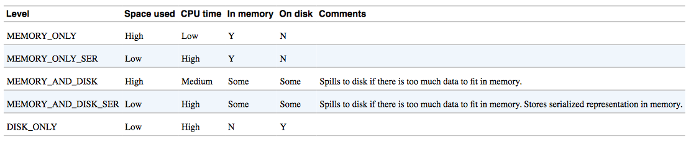

Copyright © Cay S. Horstmann 2015 
This work is licensed under a Creative Commons Attribution 4.0 International License
Note: The content of this unit is adapted from the slides of the course "Parallel Programming and Data Analysis"
by Heather Miller at EPFL.
So far we have seen:
What we'll see in this course:
Distribution introduces important concerns beyond what we have to
worry about when dealing with parallelism in the shared memory case:
What does distributed data-parallel look like?
| |
|
Shared memory case: Data-parallel programming model. Data partitioned in
memory and operated upon in parallel.
Distributed case: Data-parallel programming model. Data partitioned
between machines, network in between, operated upon in parallel.
Throughout this part of the course we will use the Apache Spark framework for distributed data-parallel programming.
Spark implements a distributed data parallel model called Resilient Distributed Datasets (RDDs)
Learning Spark by Holden Karau, Andy Konwinski, Patrick Wendell &
Matei Zaharia. O’Reilly, February 2015.
RDDs look just like immutable sequential or parallel Scala collections.
| Combinators on Scala parallel/sequential collections: |
Combinators on RDDs: |
| map | map |
| flatMap | flatMap |
| filter | filter |
| reduce | reduce |
| fold | fold |
| aggregate | aggregate |
While their signatures differ a bit, their semantics (macroscopically) are the
same:
map[B](f: A => B): List[B] // Scala List
map[B](f: A => B): RDD[B] // Spark RDD
flatMap[B](f: A => TraversableOnce[B]): List[B] // Scala List
flatMap[B](f: A => TraversableOnce[B]): RDD[B] // Spark RDD
filter(pred: A => Boolean): List[A] // Scala List
filter(pred: A => Boolean): RDD[A] // Spark RDD
While their signatures differ a bit, their semantics (macroscopically) are the
same:
reduce(op: (A, A) => A): A // Scala List
reduce(op: (A, A) => A): A // Spark RDD
fold(z: A)(op: (A, A) => A): A // Scala List
fold(z: A)(op: (A, A) => A): A // Spark RDD
aggregate[B](z: => B)(seqop: (B, A) => B, combop: (B, B) => B): B // Scala
aggregate[B](z: B)(seqop: (B, A) => B, combop: (B, B) => B): B // Spark RDD
Using RDDs in Spark feels a lot like normal Scala sequential/parallel
collections, with the added knowledge that your data is distributed across
several machines.
Example:
Given, val encyclopedia: RDD[String], say we want to search
all of encyclopedia for mentions of HEIG-VD, and count the number of pages that
mention HEIG-VD.
val result = encyclopedia.filter(page => page.contains("HEIG-VD"))
.count()
The “Hello, World!” of programming with large-scale data.
// Create an RDD
val rdd = spark.textFile("hdfs://...")
val count = ???
The “Hello, World!” of programming with large-scale data.
// Create an RDD
val rdd = spark.textFile("hdfs://...")
val count = rdd.flatMap(line => line.split(" ")) // separate lines into words
The “Hello, World!” of programming with large-scale data.
// Create an RDD
val rdd = spark.textFile("hdfs://...")
val count = rdd.flatMap(line => line.split(" ")) // separate lines into words
.map(word => (word, 1)) // include something to count
The “Hello, World!” of programming with large-scale data.
// Create an RDD
val rdd = spark.textFile("hdfs://...")
val count = rdd.flatMap(line => line.split(" ")) // separate lines into words
.map(word => (word, 1)) // include something to count
.reduceByKey(_ + _) // sum up the 1s in the pairs
That’s it.
Collection methodes that you have already seen in the Scala standard library
are divided into two major groupes:
Transformers: Return new collections as results. (Not single values.)
Examples: map, filter, flatMap, groupBy
map(f: A => B): Traversable[B]
Accessors: Return single values as results. (Not collections.)
Examples: reduce, fold, aggregate
reduce(op: (A, A) => A): A
Similarly, Spark defines transformations and actions on RDDs.
They seem similar to transformers and accessors, but there are some
important differences.
Transformations. Return new RDDs as results.
Actions. Compute a result based on an RDD, and either
returned or saved to an external storage system (e.g., HDFS).
Transformations are lazy, their result RDD is not immediately computed.
They are eager, their result is immediately computed.
Consider the following simple example:
val largeList: List[String] = ...
val wordsRdd = sc.parallelize(largeList)
val lengthsRdd = wordsRdd.map(_.length)
What has happened on the cluster at this point?
Consider the following simple example:
val largeList: List[String] = ...
val wordsRdd = sc.parallelize(largeList)
val lengthsRdd = wordsRdd.map(_.length)
val totalChars = lengthsRdd.reduce(_ + _)
... we can add an action!
If you perform an action on an RDD, on what machine is its result “returned” to?
Example:
val people: RDD[Person] = ...
val first10 = people.take(10)
Where will the Array[Person] representing first10 end up?
A Spark application is run using a set of processes on a cluster. All these processes are
coordinated by the driver program.
SparkContext upon start-up.SparkContext connects to a cluster manager (e.g., Mesos/YARN) which allocates resources.SparkContext sends tasks for the executors to run.If you perform an action on an RDD, on what machine is its result “returned” to?
Example
val people: RDD[Person] = ...
val first10 = people.take(10)
Where will the Array[Person] representing first10 end up?
The driver program.
In general, executing an action involves communication between worker nodes
and the node running the driver program.
Spark computes RDDs the first time they are used in an action.
This helps when processing large amounts of data.
Example:
val lastYearsLogs: RDD[String] = ...
val firstLogsWithErrors = lastYearsLogs.filter(_.contains("ERROR")).take(10)
In the above example, lazy execution of `filter` makes a big difference.
The execution of filter is deferred until the take action is applied.
Spark leverages this by analyzing and optimizing the chain of operations before executing it.
Spark will not compute intermediate RDDs. Instead, as soon as 10 elements of the filtered RDD have been computed, firstLogsWithErrors is done. At this point Spark stops working, saving time and space computing elements of the unused result of filter.
By default, RDDs are recomputed each time you run an action on them. This can
be expensive (in time) if you need to traverse a dataset more than once.
Spark allows you to control what is cached in memory.
val lastYearsLogs: RDD[String] = ...
val logsWithErrors = lastYearsLogs.filter(_.contains("ERROR")).persist()
val firstLogsWithErrors = logsWithErrors.take(10)
Here, we cache logsWithErrors in memory.
After firstLogsWithErrors is computed, Spark will store the contents of
logsWithErrors for faster access in future operations if we would like to
reuse it.
val numErrors = logsWithErrors.count() // faster
Now, computing the count on logsWithErrors is much faster.
Persistence levels. Other ways to control how Spark stores objects.
Beyond the transformer-like combinators you may be familiar with from Scala
collections, RDDs introduce a number of other important transformations.
| sample | Sample a fraction fraction of the data, with or without replacement, using a given random number generator seed. |
| union | Return a new dataset that contains the union of the elements in the source dataset and the argument. Pseudo-set operations (duplicates remain). |
| intersection | Return a new RDD that contains the intersection of elements in the source dataset and the argument. Pseudo-set operations (duplicates remain). |
| distinct | Return a new dataset that contains the distinct elements of the source dataset. |
| coalesce | Decrease the number of partitions in the RDD to numPartitions. Useful for running operations more efficiently after filtering down a large dataset. |
| repartition | Reshuffle the data in the RDD randomly to create either more or fewer partitions and balance it across them. This always shuffles all data over the network. |
RDDs also contain other important actions which are useful when dealing with distributed data.
| collect | Return all the elements of the dataset as an array at the driver program. This is usually useful after a filter or other operation that returns a sufficiently small subset of the data. |
| count | Return the number of elements in the dataset. |
| foreach | Run a function func on each element of the dataset. This is usually done for side effects such as interacting with external storage systems. |
| saveAsTextFile | Write the elements of the dataset as a text file (or set of text files) in a given directory in the local filesystem, HDFS or any other Hadoop-supported file system. Spark will call toString on each element to convert it to a line of text in the file. |
Often when working with distributed data, it’s useful to organize data into
key-value pairs. In Spark, these are Pair RDDs.
Useful because: Pair RDDs allow you to act on each key in parallel or regroup
data across the network.
Spark provides powerful extension methods for RDDs containing pairs (e.g.,
RDD[(K, V)]). Some of the most important extension methods are:
def groupByKey(): RDD[(K, Iterable[V])]
def reduceByKey(func: (V, V) => V): RDD[(K, V)]
def join[W](other: RDD[(K, W)]): RDD[(K, (V, W))]
Depending on the operation, data in an RDD may have to be shuffled among
worker nodes, using worker-worker communication.
This is often the case for many operations Pair RDDs!
First download Spark form here. And then open the archive and goto inside Spark directory and run
./bin/run-example SparkPi 10
It should compute Pi without any error message.
Spark runs on Java 6+ and Python 2.6+. For the Scala API, Spark 1.3.1 uses Scala 2.10. You will need to use a compatible Scala version (2.10.x). The additional information can be found on Spark documentation.
We use Spark shell to learn the framework. Run following command from Spark home directory:
./bin/spark-shell
We are going to process README.md file of Spark.
Run following commands on Spark shell and explain each line and show the results:
scala> val textFile = sc.textFile("README.md")
scala> textFile.count
scala> textFile.first
scala> val linesWithSpark = textFile.filter(line => line.contains("Spark"))
scala> textFile.filter(line => line.contains("Spark")).count
Now we create a very simple Spark application in Scala.
/* SimpleApp.scala */
import org.apache.spark.SparkContext
import org.apache.spark.SparkContext._
import org.apache.spark.SparkConf
object SimpleApp {
def main(args: Array[String]) {
val logFile = "YOUR_SPARK_HOME/README.md" // Should be some file on your system
val conf = new SparkConf().setAppName("Simple Application")
val sc = new SparkContext(conf)
val logData = sc.textFile(logFile, 2).cache()
val numAs = logData.filter(line => line.contains("a")).count()
val numBs = logData.filter(line => line.contains("b")).count()
println("Lines with a: %s, Lines with b: %s".format(numAs, numBs))
}
}
Note that applications should define a main() method instead of extending scala.App.
Subclasses of scala.App may not work correctly.
What does this program?
Our application depends on the Spark API, so we'll also include an sbt configuration file,
build.sbt which explains that Spark is a dependency. This file also adds a repository that Spark depends on:
name := "Simple Project"
version := "1.0"
scalaVersion := "2.10.4"
libraryDependencies += "org.apache.spark" %% "spark-core" % "1.3.1"
For sbt to work correctly, we'll need to layout SimpleApp.scala and build.sbt according
to the typical directory structure. Once that is in place, we can create a JAR package
containing the application's code, then use the spark-submit script to run our program.
# Your directory layout should look like this
$ find .
.
./build.sbt
./src
./src/main
./src/main/scala
./src/main/scala/SimpleApp.scala
# Package a jar containing your application
$ activator package
...
[info] Packaging {..}/{..}/target/scala-2.10/simple-project_2.10-1.0.jar
# Use spark-submit to run your application
$ YOUR_SPARK_HOME/bin/spark-submit \
--class "SimpleApp" \
--master local[4] \
target/scala-2.10/simple-project_2.10-1.0.jar
...
What is the output of the program?
In this assignment, you will get to know Spark by exploring full-text Wikipedia articles. To start first download the assignment: wikipedia.zip
Gauging how popular a programming language is important for companies judging whether or not they should adopt an emerging programming language. For that reason, industry analyst firm RedMonk has bi-annually computed a ranking of programming language popularity using a variety of data sources, typically from websites like GitHub and StackOverflow. See their top-20 ranking for January 2015 as an example.
In this assignment, we'll use our full-text data from Wikipedia to produce a rudimentary metric of how popular a programming language is, in an effort to see if our Wikipedia-based rankings bear any relation to the popular RedMonk rankings. You'll complete this exercise on just one node (your laptop).
First create a SparkConfig instance. A SparkConfig represents the configuration of your Spark application.
It's here that you must specify that you intend to run your application in "local" mode.
You must also name your Spark application at this point.
Then create a SparkContext. A SparkContext is the "handle" to your cluster.
Once you have a SparkContext, you can use it to create and populate RDDs with data.
For help, see the Spark API Docs.
There are several ways to read data into Spark. The simplest (but most unrealistic) way
to read in data is to convert an existing collection in memory to an RDD using the parallelize
method of the Spark context.
We have already pre-processed a small chunk of Wikipedia for you, and have made it available
in the articles member of the WikipediaData object.
Create an RDD (by implementing val wikiRdd) which contains the WikipediaArticle objects of articles.
We will use a simple metric for determining the popularity of a programming language: the number of Wikipedia articles that mention the language at least once.
rankLangsStart by implementing a helper method occurrencesOfLang which computes the number of
articles in an RDD of type RDD[WikipediaArticles] that mention the given language at least once.
Computing the ranking, rankLangs using occurrencesOfLang, implement a method rankLangs
which computes a list of pairs where the second component of the pair is the number of
articles that mention the language (the first component of the pair is the name of the language).
An example of what rankLangs returns might look like this:
List(("Scala",999999),("JavaScript",1278),("LOLCODE",982),("Java",42))
The list should be sorted in descending order. That is, according to this ranking, the pair with the highest second component (the count) should be the first element of the list.
Pay attention to roughly how long it takes to run this part! (It should take tens of seconds.)
How long does the code take? What is the list of ranked languages?
rankLangsUsingIndexCompute an inverted index: makeIndex
An inverted index is an index data structure storing a mapping from content, such as words or numbers, to a set of documents. In particular, the purpose of an inverted index is to allow fast full text searches. In our use-case, an inverted index would be useful for mapping from the names of programming languages to the collection of Wikipedia articles that mention the name at least once.
To make working with the dataset more efficient and more convenient, implement a method that computes an "inverted index" which maps programming language names to the Wikipedia articles on which they occur at least once.
Implement method makeIndex which returns an RDD of the following type: RDD[(String, Iterable[WikipediaArticle])].
This RDD contains pairs, such that for each language in the given langs list there is at most one pair.
Furthermore, the second component of each pair (the Iterable) contains the WikipediaArticles
that mention the language at least once.
Hint: You might want to use methods flatMap and groupByKey on RDD for this part.
Computing the ranking: rankLangsUsingIndex
Use the makeIndex method implemented in the previous part to implement a faster method
for computing the language ranking.
Like in part 1, rankLangsUsingIndex should compute a list of pairs where the second
component of the pair is the number of articles that mention the language
(the first component of the pair is the name of the language).
Again, the list should be sorted in descending order. That is, according to this ranking, the pair with the highest second component (the count) should be the first element of the list.
How long does the code take? What is the list of ranked languages?
Can you notice a performance improvement over attempt #1? Why?
rankLangsReduceByKeyIn the case where the inverted index from above is only used for computing the ranking
and for no other task (full-text search, say), it is more efficient to use the reduceByKey
method to compute the ranking directly, without first computing an inverted index.
Note that the reduceByKey method is only defined for RDDs containing pairs
(each pair is interpreted as a key-value pair).
Implement the rankLangsReduceByKey method, this time computing the ranking without
the inverted index, using reduceByKey.
Like in part 1 and 2, rankLangsReduceByKey should compute a list of pairs where the
second component of the pair is the number of articles that mention the language
(the first component of the pair is the name of the language).
Again, the list should be sorted in descending order. That is, according to this ranking, the pair with the highest second component (the count) should be the first element of the list.
Hint: method mapValues on PairRDD could be useful for this part.
How long does the code take? What is the list of ranked languages?
Can you notice an improvement in performance compared to measuring both the computation of the index and the computation of the ranking as we did in attempt #2? If so, can you think of a reason?